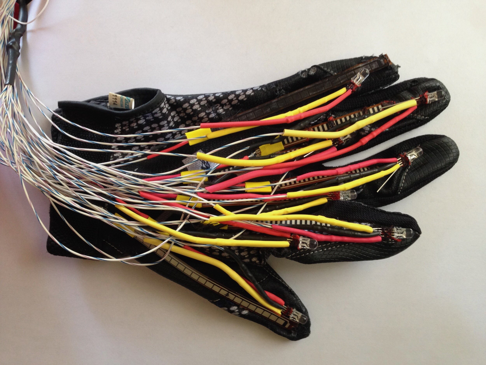

The Interactive Data Glove is a learning tool for American Sign Language learners. To learn a sign, the user selects a word or letter on a computer and attempts to make the gesture. The glove’s flex sensors monitor the user’s finger positions, and then corresponding LEDs illuminate either green or red to signify whether the finger is bent correctly.
